Последнее время слушаю очень много очень хорошей советской или советско-российской эстрады. Вот и решил сделать раздел на домашней страничке какая советская музыка, по моему, соответствует западной.
Итак, что получилось ... ?
1. Frank Sinatra, Therion ↔ Юрий Антонов
2. Mono Inc. ↔ Мальчишник
3. Gothminister ↔ Земляне
4. Roxette ↔ Каролина
5. Vanessa-Mae ↔ Комбинация
6. Abba, Britney Spears ↔ Ноль
7. Джонни Кэш ↔ Владимир Высоцкий
8. Green Day ↔ Сплин
9. Das Ich ↔ Белый Орёл
10. Garbage ↔ Мираж
11. Evanescence ↔ Сектор Газа
12. The Doors ↔ Ника
13. Celine Dion ↔ Машина Времени
14. C. C. Catch ↔ Кино
15. Infected Mushroom ↔ Сергей Наговицын
Фрэнсис Альберт Синатра (англ. Francis Albert Sinatra: 12 декабря 1915, Хобокен, Нью-Джерси — 14 мая 1998, Лос-Анджелес) — американский певец (крунер), актёр, кинорежиссёр, продюсер и шоумен. Девять раз становился лауреатом премии «Грэмми». Славился романтическим стилем исполнения песен и «бархатным» тембром голоса.
В XX веке Синатра стал легендой не только музыкального мира, но и каждого аспекта американской культуры. Когда его не стало, некоторые журналисты писали: «К чёрту календарь. День смерти Фрэнка Синатры — конец XX века». Певческая карьера Синатры стартовала ещё в 1930-х годах, а к концу жизни он считался эталоном музыкального стиля и вкуса. Песни в его исполнении вошли в классику эстрады и стиля свинг, стали наиболее яркими образцами эстрадно-джазовой манеры пения «крунинг», на них воспитаны несколько поколений американцев. В молодые годы имел прозвище Фрэнки (англ. Frankie) и Голос (англ. The Voice), в более поздние годы — Мистер Голубые Глаза (англ. Ol' Blue Eyes), а затем — Председатель (англ. Chairman). За 60 лет активной творческой деятельности записал около 100 неизменно популярных дисков-синглов, исполнил все самые известные песни крупнейших композиторов США — Джорджа Гершвина, Харольда Арлена, Кола Портера и Ирвинга Берлина.
Помимо музыкального триумфа, Синатра был и успешным киноактёром, высшей точкой его карьеры стал «Оскар», 1954 года за лучшую мужскую роль второго плана. В его «копилке» содержится множество кинонаград: от «Золотых глобусов» до премии Гильдии киноактёров США. За свою жизнь Синатра снялся более чем в 60 кинофильмах, наиболее известными из которых стали «Увольнение в город», «Отныне и во веки веков», «Человек с золотой рукой», «Высшее общество», «Гордость и страсть», «Одиннадцать друзей Оушена» и «Маньчжурский кандидат».
Фрэнк Синатра удостоен премий «Золотой глобус», Гильдии киноактёров США и Национальной ассоциации содействия прогрессу цветного населения, а за год до кончины награждён высшей наградой США — Золотой медалью Конгресса.
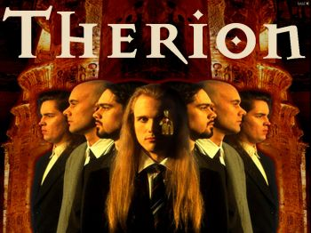
Therion (от греч. Θηριον — «зверь») — шведская метал-группа, основанная в 1987 году гитаристом Кристофером Йонсоном. Therion считаются одними из основателей и ключевых исполнителей в стиле симфоник-метал: её композиции записываются и исполняются с участием живых оркестров, приглашённых вокалистов и хоров. Большая часть песен группы касается различных мистических учений, мифологии народов мира.
Симфоник-метал или симфо-метал (англ. symphonic metal — «симфонический металл») — музыкальный стиль, в котором соединены метал и симфоническая оркестровая музыка. При создании музыки в этом стиле часто используется женский вокал, хор, симфонические музыкальные инструменты или их имитация с помощью синтезатора, нередко при записи используется полноценный симфонический оркестр. Для жанра характерны концептуальные альбомы, дуэты и хоры из нескольких вокалистов.
Юрий Михайлович Антонов (род. 19 февраля 1945, Ташкент, Узбекская ССР, СССР) — советский и российский композитор, эстрадный певец, поэт, актёр. Народный артист Российской Федерации (1997).
У Антонова характерны песни о природе и о жизни, и многие названия песен четко дают это понять:
Сотрудничество с группой «Аракс» в 1979—1981 годах приносит Антонову всесоюзную славу. Три пластинки-миньона с записанными в сопровождении этого ансамбля песнями «Анастасия» (слова Леонида Фадеева), «Зеркало» (слова Михаила Танича), «Золотая лестница» (слова М. Виккерс), «Тебе» (слова Льва Ошанина), «Я вспоминаю» (слова Леонида Фадеева), «Не забывай» (слова Михаила Танича), «Моё богатство» (слова Игоря Кохановского), «Жизнь», «Дорога к морю», «Двадцать лет спустя», а также две пластинки-миньона с песнями «Маки», «Море», «Вот как бывает», «Крыша дома твоего», «Родные места», «Наша магистраль», записанные с другими музыкантами, разошлись тиражом свыше 20 миллионов копий, сделав Ю. Антонова одним из самых популярных исполнителей в СССР — в 1982—1983 годах он становится лучшим певцом СССР в хит-параде «Звуковая дорожка».
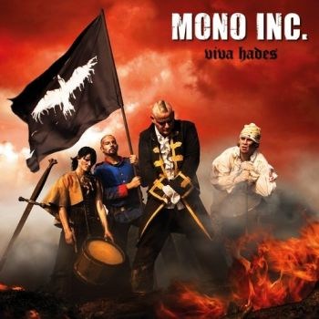
Mono Inc. немецкая группа, играющая в стилях Gothic Rock и Alternative Rock.
Готик-рок (англ. gothic rock) — музыкальный жанр, возникший как ответвление пост-панка на рубеже 1970-х и 1980-х годов. В начале 1980-х жанр стал отдельным направлением. В музыке преобладают мрачные темы и интеллектуальные направления, такие как романтизм, нигилизм, а также готическое направление в искусстве Нового времени. Готик-рок стал основой для готической субкультуры, которая впоследствии существенно расширилась.
Группа «Мальчишник» — скандальная рэп-группа 90-х, образовавшаяся в 1991 году. Рэперы «Мальчишника» исполняли песни сексуального характера и пропагандировали буквально сексуальную революцию. Группа просуществовала до 2006 года. Сейчас группа практически не существует, хотя её участники периодически устраивают концерты и в наши дни.
Музыка сексуфльного характера является в какой-то мере нигилизмом.
Нигилизм (от лат. nihil — ничто) — мировоззренческая позиция, ставящая под сомнение (в крайней своей форме абсолютно отрицающая) общепринятые ценности, идеалы, нормы нравственности, культуры. В словарях определяется также как «отрицание», «абсолютное отрицание», «социально-нравственное явление», «умонастроение», то есть, очевидно, определение нигилизма и его проявление в разное время зависело от культурно-исторической эпохи, субъективно и контекстно зависимо.
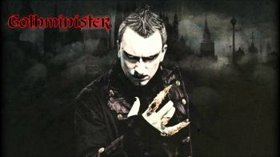
Группа Готминистер (англ. Gothminister) была создана в 1999 году Бьёрном Александром Бремом (Норвегия).
Готминистер выпустила несколько успешных клубных синглов, наибольшего успеха из которых добился хит «Angel», вошедший в десятку лучших хитов в списке немецких альтернативных групп.
Готминистер выступала на всех крупных фестивалях в Германии, таких как Wave Gotik Treffen, фестиваль Дарк Сторм, два года подряд группу приглашали на фестиваль М’эра Луна и она также выступала перед более чем 10,000 зрителей на фестивале Схаттенрайх в концертном зале «Арена» в городе Оберхаузен вместе с такими группами, как Oomph!, In Extremo и Within Temptation.
Готминистер добилась огромного успеха, и в ноябре 2003 года дебютный альбом был переиздан компанией Драккар Энтертеймент GmbH/BMG. С тех пор в группе Готминистер появилось два новых участника: клавишник Android и «живой» барабанщик Chris Dead.
В новом альбоме в музыке Готминистера как никогда раньше делается акцент на тяжёлые гитары и мрачный метал. Элементы электронного звучания тоже присутствуют, но скорее в виде фона, чтобы освободить место для потрясающих оркестровых помпезных настроений.
«Земляне» — советская и российская музыкальная группа, один из самых заметных коллективов периода «ВИА» в советской музыке. Наиболее известные и популярные песни: «Трава у дома», «Каскадёры», «Прости, Земля», «Маленький кораблик», «Путь домой», «Красный конь», «Каратэ», «Взлётная полоса», «Поверь в мечту» и многие другие.
Тематика текстов «Землян» касалась приключенческой и мужественной романтики, «мужских» профессий — лётчики, спортсмены, каскадёры, космонавты. По сравнению со многими современниками, «Земляне» отличались более тяжёлой музыкой, энергичной подачей материала, экспрессивным поведением на сцене. Фактически «Земляне» исполняли рок, но в официальной прессе того времени их старались не называть рок-группой.
Roxette (Роксэт) — шведская поп-рок-группа, лидерами которой являются Пер Гессле (автор текстов песен и музыки, гитара, вокал, губная гармоника) и Мари Фредрикссон (вокал, рояль). Как и многие другие шведские музыканты, они исполняют свои песни на английском языке. Само название «Roxette» происходит от названия песни группы Dr. Feelgood.
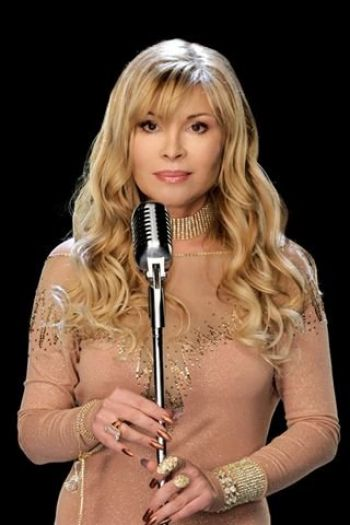
Татьяна Тишинская (настоящее имя — Татьяна Борисовна Корнева, род. 25 марта 1967, Люберцы, Московская область, РСФСР, СССР) — советская и российская певица, исполняющая русский шансон, которая до 1999 года была известна под псевдонимом Каролина.
Ванесса-Мэй Ванакорн Николсон (англ. Vanessa-Mae Vanakorn Nicholson, род. 27 октября 1978) — британская скрипачка, композитор, горнолыжница, певица. Известна в основном благодаря техно-обработкам классических композиций. Стиль исполнения: «скрипичный техно-акустический фьюжн» (англ. violin techno-acoustic fusion), или «эстрадная скрипка».
«Комбинация» — советская, а затем и российская поп-группа, основанная в 1988 году бывшим работником ОБХСС Александром Шишининым (директором группы) и молодым композитором Виталием Окороковым. Отличалась «социальной» тематикой, практически каждая песня отражала то или иное явление, происходящее в обществе на рубеже 80-х и 90-х: повальный дефицит товаров, бум мексиканских сериалов, преклонение перед представителями развитых капиталистических стран и т. д.
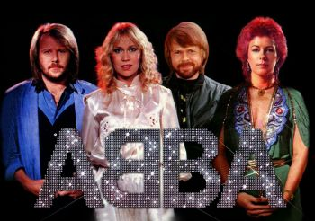
ABBA (рус. — АББА) — шведский музыкальный квартет, существовавший в 1972—1982 годах и названный по первым буквам имён исполнителей: Агнета Фельтског, Бьорн Ульвеус, Бенни Андерссон, Анни-Фрид Лингстад. Является одним из наиболее успешных коллективов за всю историю популярной музыки и самым успешным из числа созданных в Скандинавии: записи группы по всему миру были проданы тиражом более 350 миллионов экземпляров. Синглы квартета занимали первые места в мировых чартах с середины 1970-х (Waterloo) до начала 1980-х (One of Us), а альбомы-сборники возглавляли мировые хит-парады и в 2000-х. Они остались в плей-листах радиостанций, и их альбомы продолжают продаваться по сей день.
Они были первыми представителями континентальной Европы, завоевавшими первые места в чартах всех ведущих англоговорящих стран (США, Великобритания, Канада, Ирландия, Австралия и Новая Зеландия).
Группа ABBA была включена в Зал славы рок-н-ролла 15 марта 2010 года.
Бритни Джин Спирс (англ. Britney Jean Spears; род. 2 декабря 1981, Маккомб, Миссисипи, США) — американская поп-певица, обладательница премии «Грэмми», танцовщица, автор песен, киноактриса.
Её дебютный альбом …Baby One More Time сделал её всемирно популярной, а одноимённый сингл возглавил чарт Billboard Hot 100. Первый альбом Бритни содержал пять мощных хитов. Успешный дебют певицы в музыке породил большой общественный резонанс: так, The Daily Yomiuri назвала её «самым одарённым несовершеннолетним поп-идолом последних лет», а по мнению Rolling Stone, «Бритни Спирс — классический стереотип подростковой королевы рок-н-ролла, ангельский ребёнок, который просто должен быть на сцене».
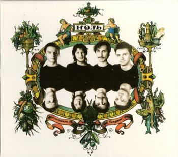
Ноль — советская и российская рок-группа, была основана певцом-баянистом Фёдором Чистяковым (по прозвищу «Дядя Фёдор») вместе с барабанщиком Алексеем «Николс» Николаевым и Анатолием Платоновым в Ленинграде (ныне Санкт-Петербург) осенью 1985-го года. После записи первого альбома к музыкантам присоединился бас-гитарист Дмитрий «Монстр» Гусаков (ранее игравший в группе «Вымысел», а затем в группе «Цветные сны» с Ильёй Сёмкиным), а в 1987 году — гитарист Георгий Стариков. От других ансамблей конца 1980-х они отличались использованием баяна как главного солирующего инструмента рок-группы.
Джонни Кэш (англ. Johnny Cash; 26 февраля 1932, Кингсленд, Арканзас — 12 сентября 2003, Нашвилл, Теннесси) — американский певец и композитор-песенник, ключевая фигура в музыке кантри, является одним из самых влиятельных музыкантов XX века. Несмотря на то, что в первую очередь его признали иконой кантри, исполнение песен в таких жанрах как госпел, рок-н-ролл и рокабилли — не редкость. Благодаря своей музыке, стилю жизни на сцене и вне её заслужил авторитет среди большого круга любителей музыки, далеко за пределами жанра кантри. Сам себя позиционировал как исполнителя «христианского кантри».
С Джонни Кэшем ассоциируется устойчивое словосочетание «Человек в чёрном» (англ. Man In Black), поскольку с 1960-х годов для него было характерно ношение тёмной одежды (причины этого он поясняет в тексте одноимённой песни «Man in Black» 1971 года).
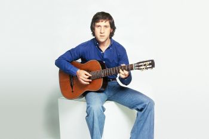
Владимир Семёнович Высоцкий (25 января 1938, Москва — 25 июля 1980, Москва) — советский поэт, актёр и автор-исполнитель песен; автор прозаических произведений. Лауреат Государственной премии СССР (1987, посмертно).
Актёр Театра драмы и комедии на Таганке в Москве (1964—1980). Владимир Высоцкий сыграл более 20-ти ролей в театре, в том числе Гамлета («Гамлет» У. Шекспира), Галилея («Жизнь Галилея» Б. Брехта), Лопахина («Вишнёвый сад» А. Чехова). Наиболее примечательными работами в кинематографе как актёра являются его роли в фильмах «Место встречи изменить нельзя» (включая в качестве помощника режиссёра), «Маленькие трагедии», «Интервенция», «Хозяин тайги», «Вертикаль», «Служили два товарища», «Сказ про то, как царь Пётр арапа женил», «Короткие встречи», «Плохой хороший человек».
Владимир Высоцкий вошёл в историю как автор-исполнитель своих песен под русскую семиструнную гитару.
По итогам опроса ВЦИОМ, проведённого в 2010 году, Высоцкий занял второе место в списке «кумиров XX века» после Юрия Гагарина. Опрос, проведённый ФОМ в середине июля 2011 года, продемонстрировал, что, несмотря на снижение интереса к творчеству Высоцкого, абсолютному большинству (98 %) россиян знакомо имя «Владимир Высоцкий», а около 70 % ответили, что его песни нравятся, и считают его творчество важным явлением отечественной культуры XX века.
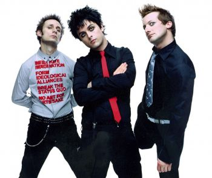
Green Day (рус. Зелёный день) — американская панк-рок-группа, основанная в 1986 году. Состоит из четырёх участников: Билли Джо Армстронга (вокал, гитара), Майка Дёрнта (бас гитара, бэк-вокал), Тре Кула (ударные) и (с момента анонса альбома ?Uno!) Джейсона Уайта (гитара).
Green Day первоначально были частью панк-рок среды, сформировавшейся вокруг панк-клуба 924 Gilman Street (Беркли). Их первые альбомы, записанные на независимой компании Lookout!Records, позволили группе заработать множество фанатов. В результате группа вместе с другими калифорнийскими панками (The Offspring, Rancid) подняла волну огромного интереса к панк-музыке не только в США, но и во всём мире. Green Day стали вдохновителями таких известных групп, как Good Charlotte, Fall Out Boy, Simple Plan.
В 2011 году трио было признано лучшей панк-группой в истории музыки по результатам опроса, проведённого журналом Rolling Stone. В 2015 году Green Day были включены в «Зал славы рок-н-ролла».
«Сплин» — российская рок-группа из Санкт-Петербурга. Бессменный лидер — Александр Васильев. Датой рождения группы считается 27 мая 1994 года.
Название группы возникло под влиянием строк стихотворения российского поэта Серебряного века Саши Чёрного, на основе которого была создана песня «Под сурдинку» из первого альбома группы («Пыльная быль»):
Как молью изъеден я сплином…
Посыпьте меня нафталином,
Сложите в сундук и поставьте меня на чердак,
Пока не наступит весна.
Das Ich — немецкая группа, играющая в стилях darkwave, industrial, EBM electro-gothic. Название Das Ich заимствовано из работ основателя психоанализа Зигмунда Фрейда (например Freud, Sigmund (1923), Das Ich und das Es) и тесно связано с термином Эго. Основной мотив творчества группы — экспрессионистские стихи, наложенные на электронную музыку. На концертах музыканты широко используют театральные приёмы, декорации, грим.
«Белый Орёл» — российская музыкальная группа, основанная в 1997 году бизнесменом Владимиром Жечковым, который лично исполнил большинство хитов группы.
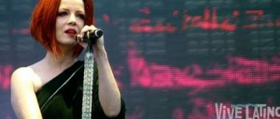
Garbage (в переводе с англ. — «мусор») — рок-группа, сформированная в США в городе Мэдисон в 1994 году. В состав группы входят шотландская певица Ширли Мэнсон (вокал, гитара, клавишные) и американские музыканты Стив Маркер (гитара, клавишные), Дюк Эриксон (бас-гитара, клавишные, гитара, перкуссия) и Бутч Виг (ударные, перкуссия). Коллектив стал известен своим необычным звучанием, выразительным вокалом солистки, а также инновационными средствами обработки звука. Garbage являются одной из наиболее успешных рок-групп 1990-х годов. Всего в мире продано более 17 миллионов экземпляров альбомов Garbage.
«Мираж» — советская, а затем российская музыкальная группа, работающая, в основном, в стиле евродиско.
Evanescence (с англ. — «Исчезновение») — американская рок-группа, основанная в 1995 году вокалисткой Эми Ли и гитаристом Беном Муди.
Группа добилась большой популярности в начале 2003 года с выходом альбома Fallen, разошедшегося тиражом около 15 миллионов копий и принёсшего группе две премии «Грэмми». В 2004 г. вышел первый концертный альбом Evanescence Anywhere but Home. В 2006 г. был выпущен второй студийный альбом The Open Door, тираж которого составил около 6 миллионов копий.
После выхода второго альбома группа временно ушла со сцены.
Среди критиков нет единства во мнениях относительно того, как классифицировать музыку Evanescence: как рок или как метал. Некоторые критики сравнивают коллектив с итальянской готик-метал-группой Lacuna Coil, уточняя, однако, что Evanescence пошли ещё дальше последних в разбавлении метала элементами поп-музыки.
Журналистка New York Times Джулия Чаплин сочла музыку Evanescence готик-металом.
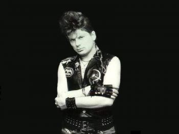
«Сектор Газа» — советская и российская рок-группа, основанная 5 декабря 1987 года в Воронеже музыкантом, вокалистом и автором песен Юрием Клинских, более известным под псевдонимом Хой. 9 июня 1988 года состоялось первое выступление группы в «электрическом» составе в местном рок-клубе при ТЭЦ, там группа получила приз зрительских симпатий. Однако традиционно датой основания группы считается 5 декабря 1987 года, когда состоялось первое сольное выступление Юрия Клинских с репертуаром будущего «Сектор Газа» в воронежском рок-клубе. На сегодняшний день группа широко известна на территории всего бывшего СССР.
Название группы произошло от индустриального Левобережного района Воронежа, названного в народе в шутку «Сектором Газа» из-за обилия дымящих заводов. В этом районе и проживал Юрий Клинских, а также находился воронежский рок-клуб. Название «Сектор Газа» также было навеяно и популярностью одноимённого палестинского региона, ставшего «горячей точкой» и частым сюжетом советских СМИ той эпохи.
« …ну, это чисто такое местное название в Воронеже, где был рок-клуб, к которому мы принадлежали, он находился в очень задымлённом районе, и я его так прозвал — "Сектор газа", и мы в этом клубе постоянно играли, а так как я жил там неподалёку в этом районе, группу я назвал также — "Сектор Газа". Чисто местное название, я ведь не думал тогда, что мы так раскрутимся, я думал, что мы поиграемся и на этом всё закончится, как и многие коллективы, тогда первые в 85—87 году, когда открылись рок-клубы, вы помните, было очень много команд довольно-таки интересных…
Юрий «Хой» Клинских »
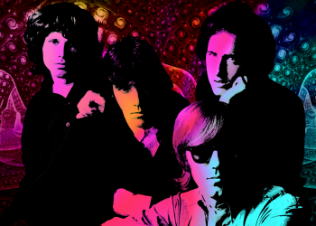
The Doors (с англ. — «Двери») — американская рок-группа, созданная в 1965 году в Лос-Анджелесе, оказавшая сильное влияние на культуру и искусство 60-х годов. Загадочные, мистические, иносказательные тексты песен и яркий образ вокалиста группы, Джима Моррисона, сделали её едва ли не самой знаменитой и равно же противоречивой группой своего времени. После смерти в 1971 году Джима Моррисона оставшиеся музыканты продолжили выступать и записываться в формате трио, а в 1973 году группа прекратила своё существование. В общей сложности в США было реализовано 32 500 500 копий их альбомов. Группа продала более 100 миллионов альбомов по всему миру. The Doors стала первой американской группой, у которой было 8 золотых альбомов подряд. В 1993 году были введены в Зал славы рок-н-ролла.
Ника (настоящее имя Ирина Николаевна, фамилия по мужу Мальгина) (род. 8 июня 1964) — популярная эстрадная певица, Заслуженная артистка России. Пик популярности пришёлся на 1990-е годы. Наиболее известные композиции: «Три хризантемы», «Секс-бомба», «Карие глаза», «Это не мой секрет», «Бумажные цветы», «Подари мне поцелуй».
В Википедии не указано какое-либо отношение Ники к готик-металлу, но стиль очень похож на тот, что у Within Temptation и Evanescence.
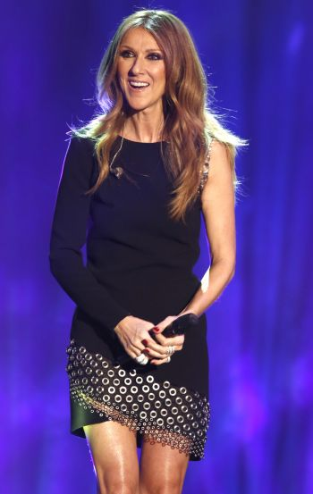
Селин Мари Клодетт Дион (фр. Céline Marie Claudette Dion, род. 30 марта 1968) — канадская певица. Родившаяся в многодетной семье в провинции Квебек, Дион в подростковом возрасте стала звездой во франкоязычном мире после того, как её менеджер и будущий муж Рене Анжелил заложил свой дом, чтобы профинансировать её первую запись. В 1990 году она выпустила англоязычный альбом Unison и утвердилась как певица в Северной Америке и других англоязычных регионах мира.
«Машина времени» — советская и российская рок-группа. Основана Андреем Макаревичем и Сергеем Кавагоэ 27 мая 1969 года. Жанр творчества группы включает элементы классического рока, рок-н-ролла, блюза и бардовской песни. Автор абсолютного большинства текстов песен и бессменный лидер группы — Андрей Макаревич, авторы музыки — Андрей Макаревич, Александр Кутиков, Евгений Маргулис, Пётр Подгородецкий, Андрей Державин.
Каролина Катарина Мюллер (нем. Caroline Catharina Müller; 31 июля 1964, Осс, Северный Брабант) — немецкая певица нидерландского происхождения, получившая известность под сценическим псевдонимом C. C. Catch (рус. Си Си Кетч). Исполняет песни на английском языке в стилях поп и диско. С 2007 года проживала в Лондоне.
Дискография, Альбомы:
• 1986 — Catch the Catch (№ 6 — Германия, № 7 — Бельгия, № 2 — Югославия, № 8 — Швейцария)
• 1986 — Welcome to the Heartbreak Hotel (№ 28 — Германия, № 15 — Бельгия, № 21 — Норвегия, № 14 — Югославия)
• 1987 — Like a Hurricane (№ 30 — Германия, № 2 — Югославия)
• 1988 — Big Fun (№ 53 — Германия, № 40 — Бельгия, № 22 — Югославия)
• 1989 — Hear What I Say (№ 75 — Германия)
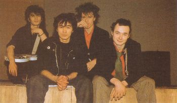
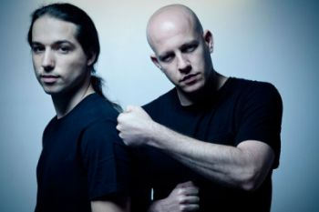
Infected Mushroom — израильская электронная группа. Изначально в группе было два человека — Эрез Айзен и Амит Дувдевани. Позже к ним присоединились Эрез Нетз, Том Каннингхэм и Рогерио Жардим.
Коллектив:
Эрез Айзен родился 8 сентября 1980 года и с ранних лет получил музыкальное образование. Уже в 4 года Эрез научился играть на органе, а в 8 лет начал обучаться игре на фортепиано в Хайфской Консерватории. В 11 лет решил попробовать себя в электронной музыке с помощью Impulse Tracker. С 16 лет сотрудничал с различными диджеями, в том числе с DJ Jorg в составе проекта Shiva Shidapu. Слово Shidapu появилось случайно — из-за помех при телефонном разговоре с Йоргом. Эрез хотел взять псевдоним Sidpao, но Йорг расслышал Shidapu.
Амит Дувдевани родился 7 ноября 1974 года и получил схожее музыкальное образование. С семи лет начал играть на фортепиано, позже увлёкся тяжёлым металлом и панк-роком. Амит играл на синтезаторе и писал лирику для местной панк-группы Enzyme. На транс-тусовку Амит попал впервые в 1991 году за неделю до призыва в армию (где он получил прозвище Duvdev), что сильно изменило его жизнь. С тех пор он думал только о транс-музыке. После службы Амит провёл год в Индии, в основном в штате Гоа, что окончательно определило его направление в музыке.
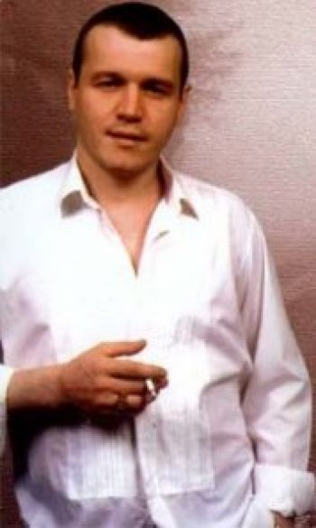
Сергей Борисович Наговицын (22 июля 1968, Пермь (Закамск), СССР — 20 декабря 1999, Курган) — российский автор-исполнитель песен в жанре русский шансон и городской романс.